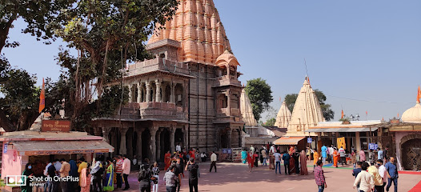
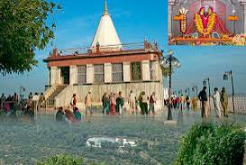

Places and Cities
Indore
- Rajwada Palace: A historic palace that showcases Maratha architecture and is a symbol of Indore’s royal heritage.
- Lal Bagh Palace: One of the most spectacular royal palaces of Indore, with lavish interiors and sprawling gardens.
- Kanch Mandir: A stunning Jain temple made entirely of glass, known for its intricate glasswork and spiritual significance.
- Sarafa Bazaar: A bustling night market known for its mouth-watering street food and lively atmosphere.
- Patalpani Waterfall: A scenic waterfall located on the outskirts of Indore, offering breathtaking views and hiking opportunities.
- Central Museum: A museum housing a vast collection of artifacts, sculptures, and ancient relics of Madhya Pradesh's history.
Bhopal
- Upper Lake (Bhojtal): A large and beautiful man-made lake, perfect for boating and enjoying scenic views.
- Van Vihar National Park: A wildlife sanctuary that offers a home to various species of animals and birds, ideal for nature enthusiasts.
- Taj-ul-Masajid: One of the largest mosques in India, known for its impressive architecture and historical significance.

- Bhimbetka Caves: A UNESCO World Heritage site with ancient rock shelters and cave paintings dating back thousands of years.
- Sanchi Stupa: A Buddhist monument of great historical and architectural significance, located a short distance from Bhopal.
- Shaukat Mahal: A blend of Gothic and Islamic architecture, showcasing Bhopal's royal heritage.
Gwalior
- Gwalior Fort: A historic fort known for its impressive architecture, dating back over 1,000 years, offering panoramic views of the city.
- Jai Vilas Palace: A grand palace that combines European and Indian architectural styles, now a museum displaying royal artifacts.
- Saas Bahu Temple: An intricately carved temple dedicated to Lord Vishnu, showcasing fine craftsmanship.

- Teli Ka Mandir: A towering temple inside the Gwalior Fort complex, known for its unique blend of Dravidian and North Indian architecture.
- Sun Temple: A stunning temple modeled after the famous Konark Sun Temple, dedicated to the Sun God.
- Gwalior Zoo: A well-maintained zoo and botanical garden, great for family outings and nature lovers.
Jabalpur
- Bhedaghat Marble Rocks: A stunning natural formation with towering marble cliffs along the Narmada River, offering boat rides and breathtaking views.
- Dhuandhar Falls: A famous waterfall near Bhedaghat, known for its misty spray and thundering sound.
- Rani Durgavati Museum: A museum dedicated to the history and culture of Jabalpur, showcasing artifacts from the region's rich past.

- Madan Mahal Fort: A historic fort built by the Gond rulers, offering panoramic views of Jabalpur city.
- Bargi Dam: A large dam on the Narmada River, known for its scenic beauty and boat rides.
- Chausath Yogini Temple: A 10th-century temple located near Bhedaghat, dedicated to the 64 Yoginis, with intricate stone carvings and beautiful architecture.
Ujjain
- Mahakaleshwar Temple: One of the twelve Jyotirlingas, this temple is dedicated to Lord Shiva and is a major pilgrimage site.
- Kumbh Mela: Ujjain is one of the four locations where this massive Hindu pilgrimage and festival is held every 12 years.
- Kal Bhairav Temple: A temple dedicated to Kal Bhairav, a fierce manifestation of Lord Shiva, where liquor is offered to the deity.

- Ram Ghat: A popular ghat on the banks of the Kshipra River, known for the evening aarti and bathing rituals during Kumbh Mela.
- Vikram University: A prominent educational institution with historical significance, named after King Vikramaditya.
- Bhartrihari Caves: Ancient caves where the famous poet and philosopher Bhartrihari meditated.
Wildlife and National Parks
Kanha National Park
- Tiger Reserve: One of the best places in India to spot Bengal tigers in their natural habitat.
- Barasingha (Swamp Deer): Known as the "Jewel of Kanha," the park is the only place where this endangered species can be found.
- Kanha Museum: A museum that provides visitors with insights into the park's history, wildlife, and ecosystem.
- Jeep Safari: Explore the vast landscapes of the park and witness its diverse wildlife through guided jeep safaris.
- Bird Watching: Kanha is a birdwatcher's paradise with over 300 species of birds, including eagles, hawks, and owls.
- Bamni Dadar: Known as the "Sunset Point," it offers breathtaking views of the forest and sunset.
Bandhavgarh National Park
- Tiger Safari: Bandhavgarh is renowned for its high density of Bengal tigers, offering thrilling jungle safaris to spot these majestic animals in their natural habitat.
- Bandhavgarh Fort: An ancient fort located within the park, offering panoramic views and a glimpse into the region's history and mythology.
- Jeep Safari: A popular way to explore the dense forests and spot various wildlife, including leopards, deer, and exotic birds.
- Elephant Safari: For a more traditional wildlife experience, tourists can explore parts of the park on the back of an elephant.
- Cheshpur Waterfall: A serene waterfall located near the park, ideal for nature lovers and photographers.
- Bandhavgarh Hill: A scenic hill offering hiking opportunities and bird-watching in the lush surroundings.
Pench National Park
- Flora and Fauna: The park is home to a diverse range of wildlife, including Bengal tigers, leopards, deer, and over 200 species of birds.
- Jungle Safaris: Visitors can explore the park through guided safaris, offering a chance to witness wildlife in their natural habitat.
- Wolf Sanctuary: A dedicated area for Indian wolves, where these elusive creatures can be spotted.

- Elephant Rides: A unique way to explore the park and get closer to nature, with elephant-back rides through the forest.
- Camping: Visitors can camp at designated spots within the park to experience the wilderness overnight.
- Sitaghat: A scenic spot by the river, known for bird watching and peaceful natural surroundings.
Satpura National Park
- Tiger Reserve: A renowned reserve for spotting Bengal tigers, leopards, and other majestic wildlife in their natural habitat.
- Dhoopgarh: The highest point in the Satpura ranges, offering stunning views and beautiful sunset points.
- Denwa River: A scenic river that runs through the park, providing opportunities for boat safaris and viewing aquatic wildlife.
- Pachmarhi Hill Station: A serene hill station near the park, known for its caves, waterfalls, and tranquil surroundings.
- Jeep Safaris: Explore the park through thrilling jeep safaris, offering sightings of exotic wildlife, including sloth bears and Indian bisons.
- Birdwatching: A paradise for bird lovers, with over 300 species of birds, including migratory and indigenous species.
Religious and Spiritual Sites
Maheshwar
- Maheshwar Fort: A historic fort offering stunning views of the Narmada River, with intricate architecture and temples.
- Ahilya Temple: A sacred temple dedicated to Goddess Ahilya, known for its beautiful carvings and spiritual ambiance.
- Baneshwar Temple: An ancient temple dedicated to Lord Shiva, located near the banks of the Narmada.
- Mandir Ghat: A serene ghat along the Narmada, perfect for rituals and meditation.
- Maheshwar Ghats: Beautifully constructed steps leading to the river, ideal for evening prayers and a peaceful atmosphere.
- Fort Museum: A museum within the fort showcasing artifacts and history of Maheshwar.
Udaipur
- Jag Mandir: A beautiful island palace located on Lake Pichola, known for its stunning architecture and serene surroundings.
- Saheliyon Ki Bari: A historic garden built for the royal ladies, featuring fountains, lotus pools, and marble elephants.
- City Palace: A magnificent palace complex that offers a glimpse into the royal history and architecture of Udaipur.
- Jagdish Temple: A renowned Hindu temple dedicated to Lord Vishnu, famous for its intricate carvings and architecture.
- Fateh Sagar Lake: A scenic lake that offers boating and is surrounded by hills and gardens, providing a tranquil environment.
- Eklingji Temple: A historic temple complex dedicated to Lord Shiva, located just outside Udaipur, known for its stunning architecture.
Orchha
- Orchha Fort: A majestic fort complex featuring beautiful palaces and temples, set along the Betwa River.
- Ram Raja Temple: A revered temple dedicated to Lord Rama, known for its stunning architecture and spiritual significance.
- Chaturbhuj Temple: An ancient temple dedicated to Lord Vishnu, renowned for its intricate carvings and panoramic views.
- Sheesh Mahal: A stunning palace with beautiful glasswork and frescoes, offering a glimpse into Orchha's royal history.
- Jehangir Mahal: A beautiful palace built in honor of Mughal Emperor Jahangir, known for its unique architectural style.
- Dinman Hardaul's Palace: A historic palace associated with the local legends and folk tales of Orchha.
Other Attractions
Khajuraho Dance Festival
- Overview: The Khajuraho Dance Festival is an annual event that showcases classical dance forms against the backdrop of the magnificent Khajuraho temples.
- Location: Khajuraho, Madhya Pradesh, known for its UNESCO World Heritage-listed temples.
- Duration: The festival typically takes place in the first week of February, lasting for a week.
- Dance Forms: The festival features various classical dance forms including Kathak, Bharatanatyam, Odissi, and Kuchipudi performed by renowned artists.
- Cultural Significance: This festival celebrates India's rich cultural heritage and offers a platform for artists to showcase their talent.
- Visitor Experience: Attendees can enjoy mesmerizing performances in the serene environment of the ancient temples, enhancing the cultural experience.
Maihar
- Maihar Devi Temple: A renowned temple dedicated to Goddess Durga, located on a hilltop with stunning views.
- Chandravali Palace: A historic palace known for its architecture and picturesque surroundings.
- Khoya Ghar: A beautiful natural spot ideal for picnics and enjoying nature.

- Baij Nadi: A scenic river offering a peaceful environment for relaxation and outdoor activities.
- Sala Devi Temple: A sacred temple located nearby, dedicated to the goddess Sala Devi, known for its beautiful setting.
- Amrai Waterfall: A picturesque waterfall perfect for nature lovers and adventure enthusiasts.
Raisen
- Raisen Fort: A historic fort known for its massive walls and scenic views, rich in history dating back to the 11th century.
- Bhimbetka Rock Shelters: A UNESCO World Heritage site featuring ancient rock paintings and archaeological significance.
- Sanchi Stupa: A famous Buddhist monument and UNESCO World Heritage site, known for its intricate carvings and architecture.
- Udayagiri Caves: Ancient rock-cut caves known for their historic sculptures and inscriptions.
- Mandapeshwar Caves: Famous for their intricate carvings and serene surroundings, these caves offer a glimpse into ancient architecture.
- Local Handicrafts: Explore traditional crafts and textiles that reflect the rich cultural heritage of the region.
Datia
- Datia Palace: An impressive historical palace known for its unique Indo-Islamic architecture and intricate carvings.
- Bir Singh Palace: A grand palace built by Raja Bir Singh Deo, surrounded by beautiful gardens and landscapes.
- Surya Mandir: A temple dedicated to the Sun God, known for its stunning architecture and serene surroundings.
- Shri Gopeshwar Mahadev Temple: An ancient temple dedicated to Lord Shiva, known for its religious significance and architecture.
- Datia Fort: A historic fort that offers panoramic views of the surrounding area, showcasing Datia's rich heritage.
- Chhatri of Bir Singh Deo: A beautiful memorial dedicated to the king, surrounded by lush greenery.
Dhar
- Dhar Fort: A historic fort offering stunning views of the surrounding landscape and rich in history.
- Mandav (Mandavgarh): A beautiful ancient site with palaces, temples, and breathtaking views, known for its romantic legends.
- Ahilya Fort: A magnificent fort dedicated to Rani Ahilyabai Holkar, showcasing exquisite architecture and historical significance.
- Bhimashankar Temple: An ancient temple dedicated to Lord Shiva, known for its architectural beauty and serene surroundings.
- Chor Ghat: A scenic spot on the way to Mandu, offering stunning views and a peaceful atmosphere.
- Gidhalkheda Fort: A lesser-known fort with historical significance and great views of the area.